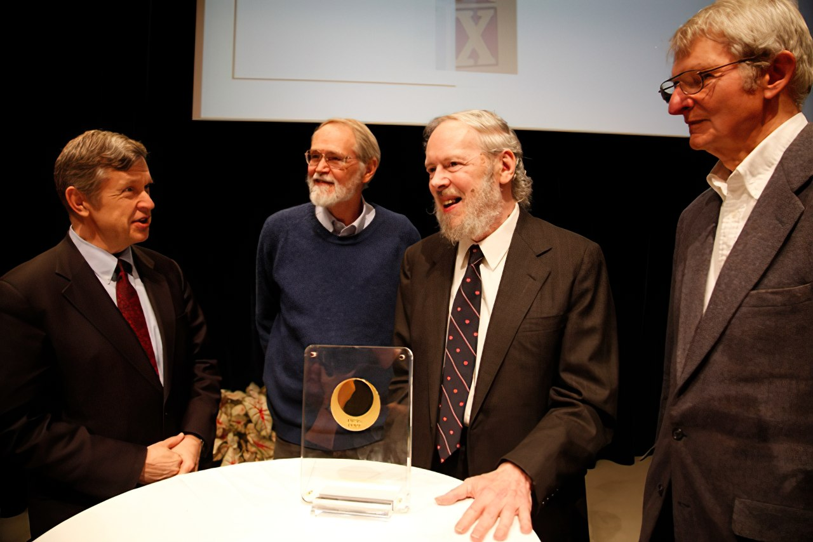

...creater of "C".

In 2011, the Japan Prize was awarded in the field of Information and Communications to Dr. Dennis M. Ritchie
Dr. Ritchie (second from right) with colleagues and Bell Labs alumni, Dr. Aho (left), Dr. Kernighan (second from left) and Dr. McIlroy (far right)
Dr. Ritchie (second from right) with colleagues and Bell Labs alumni, Dr. Aho (left), Dr. Kernighan (second from left) and Dr. McIlroy (far right)
- one
- two
- three
- four
More Info can be found at link